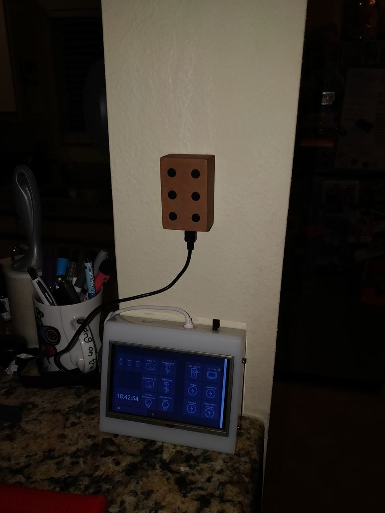
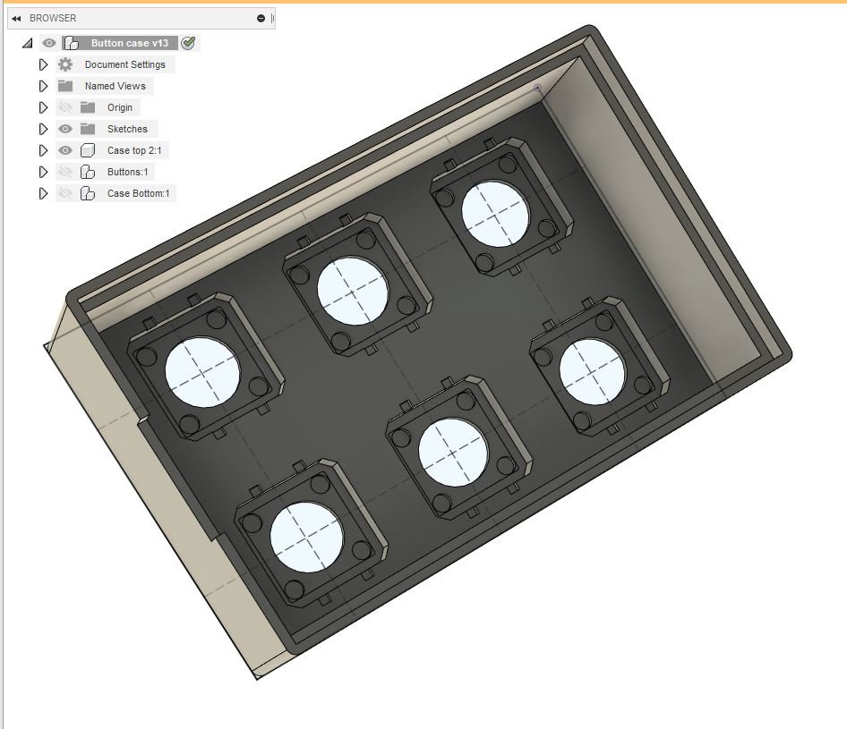
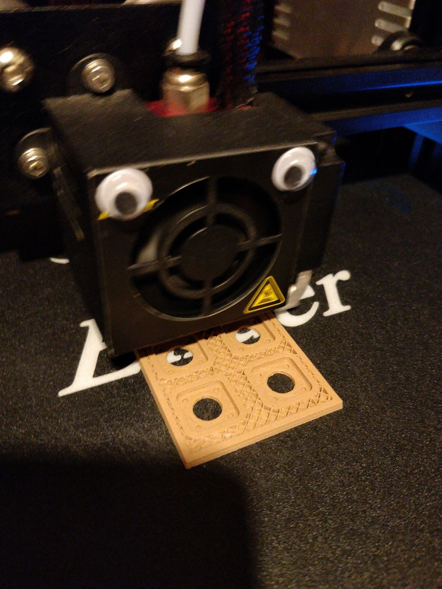
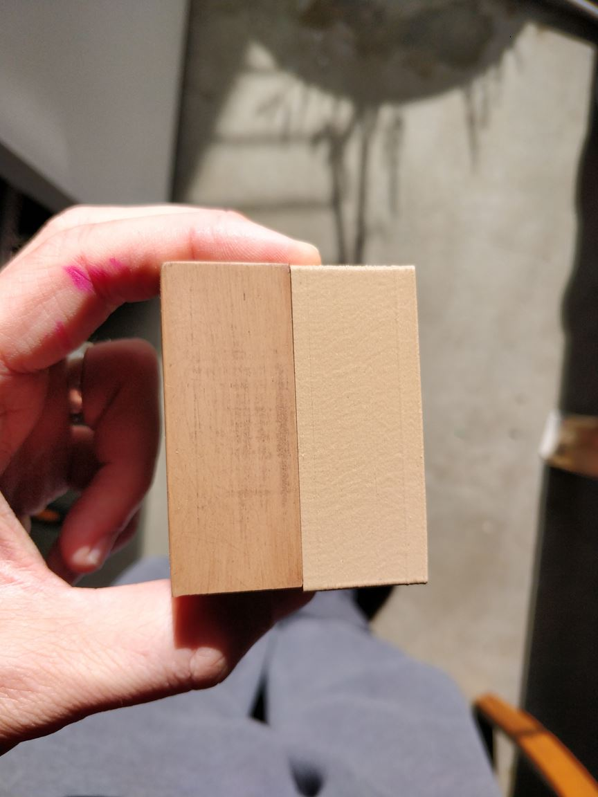
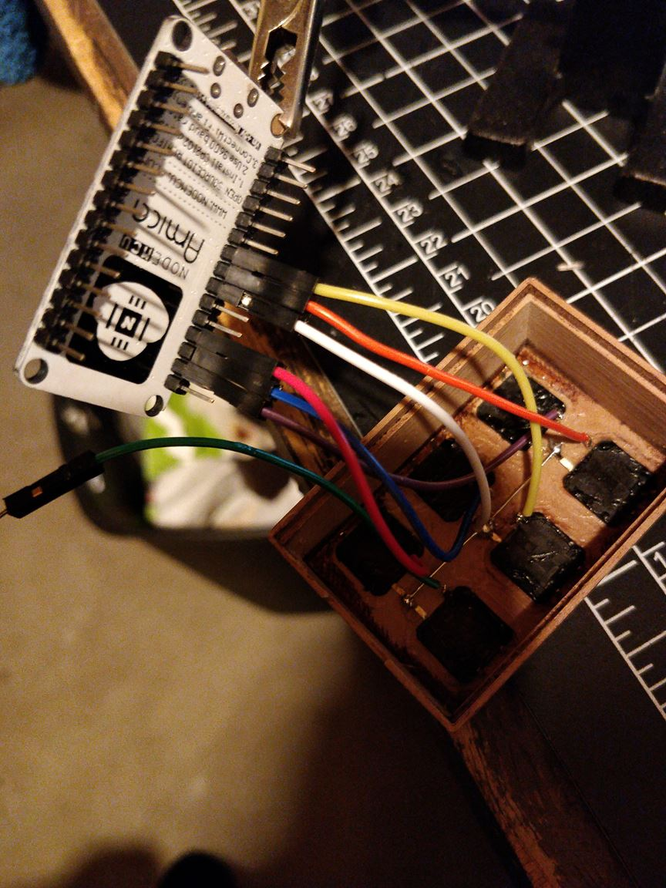
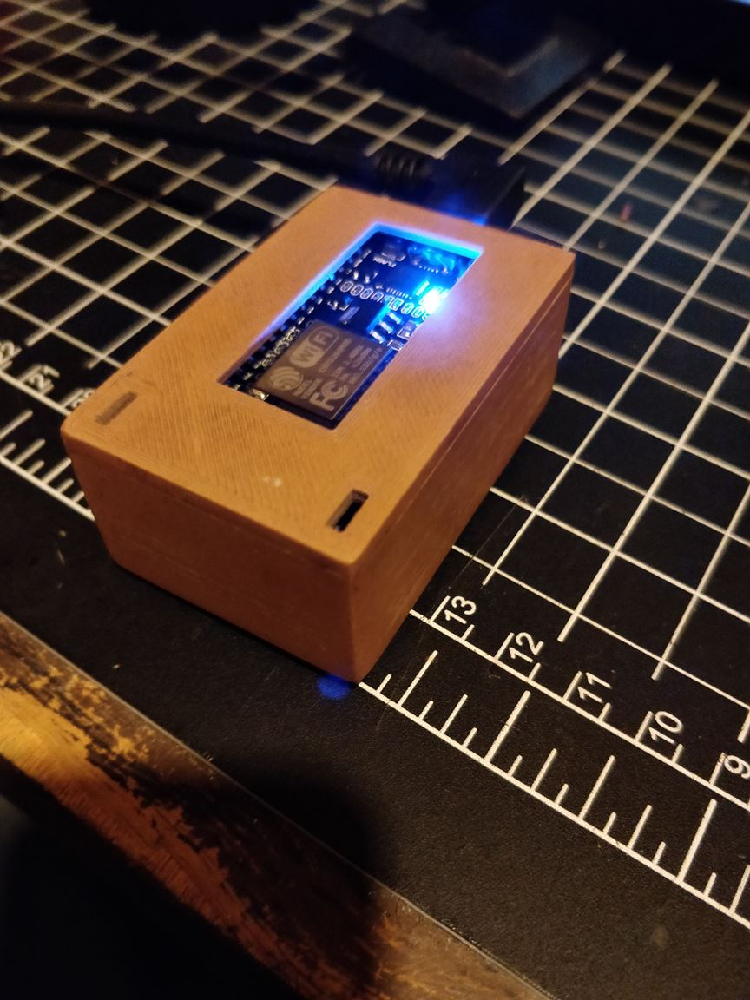
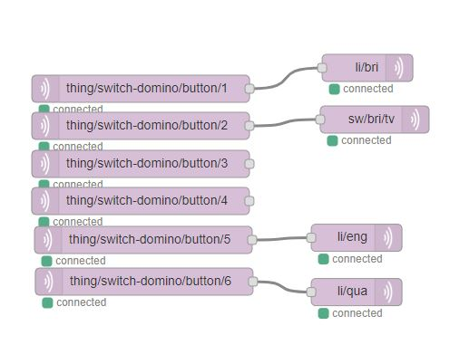
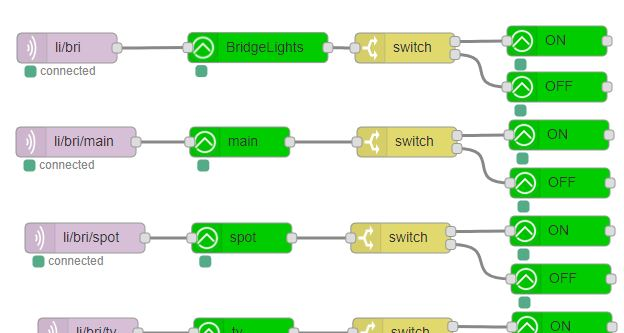

Smart Switch 1 is 6 button wifi switch. It is powered by an ESP8266 NodeMCU and interfaces with our smart home server OpenHab2.
I built this switch because we are renting and unable to make any changes to the house's electrical systems.
I created a model in Fusion 360. The hardest part was getting the button tolerances right as I wanted them to press fit in the case:
This was my first time printing with wood filament, which is regular PLA plastic mixed with sawdust:
The print came out really well, though the tone was a bit lighter than I'd hoped for. One of the advantages of wood filament is that you can process it like wood - it sands REALLY WELL to give a premium soft touch feel. It can also be stained to change the colour, left is sanded and stained, right is raw from the print bed:
The stain takes longer to soak in than real wood, so give it a while. I didn't finish the sanding and left some of the layer lines and scratches to give it a more natural "grained" appearance.
The circuit was pretty simple, I just connected each button to an input pin on the NodeMCU and set the pin mode to use the internal pull up resisitors:
The final step was to mount the NodeMCU to the base plate:
I programmed the buttons to send MQTT messages to the OpenHab2 server. I use Node-RED for the control system, which is a nice visual tool to create graphs and logical conditions. I gave each of the buttons a unique ID and then mapped the IDs to house functions, in this case turning on lights and the tv:
 